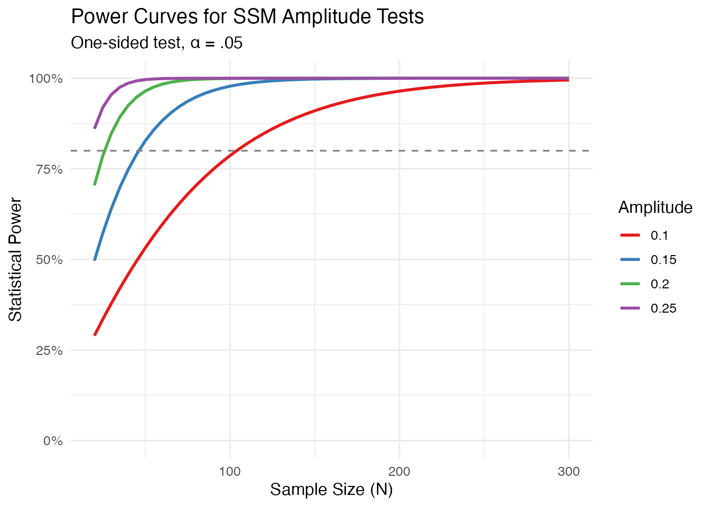

Overview
The ssmpower package provides tools for power
analysis and sample size planning for Structural Summary Method
(SSM) analyses of circumplex data. The methods are based on:
- Zimmermann & Wright (2017) - Bootstrap CIs and effect size benchmarks
- Gurtman (1992) - Foundational SSM methodology
- Cohen (1988, 1992) - Power analysis framework
Installation
# Install from GitHub
remotes::install_github("yourusername/ssmpower")Quick Start
# How much power do I have?
ssm_power_amplitude(effect = 0.15, n = 100)
#>
#> SSM Power Analysis
#> ==================
#> Type: amplitude (single_sample)
#> Effect size: 0.150
#> Sample size: 100
#> Alpha: 0.050
#> Test: one-sided
#> ------------------
#> Power: 0.978
# How many participants do I need?
ssm_sample_size_amplitude(effect = 0.15, power = 0.80)
#>
#> SSM Sample Size Calculation
#> ===========================
#> Type: amplitude (single_sample)
#> Effect size: 0.150
#> Target power: 0.80
#> Alpha: 0.050
#> Test: one-sided
#> ---------------------------
#> Required n: 47
#> Achieved power: 0.8060
# Quick reference guide
ssm_sample_size_guide()
#>
#> ============================================================
#> SSM SAMPLE SIZE QUICK REFERENCE GUIDE
#> (Power = 80%, alpha = .05)
#> ============================================================
#>
#> Effect Size Benchmarks (Zimmermann & Wright, 2017)
#> ------------------------------------------------------------
#> Amplitude: Small = 0.10 | Medium = 0.16 | Large = 0.23
#> Elevation: Small = 0.02 | Medium = 0.11 | Large = 0.27
#>
#> SINGLE-SAMPLE: Test if parameter differs from 0
#> ------------------------------------------------------------
#> Amplitude: n = 104 (small) | n = 41 (medium) | n = 20 (large)
#> Elevation: n = 7064 (small) | n = 234 (medium) | n = 39 (large)
#>
#> TWO-GROUP: Test if parameters differ between groups
#> ------------------------------------------------------------
#> Amplitude: n = 264/grp (small) | n = 104/grp (med) | n = 50/grp (lg)
#> ============================================================Effect Size Benchmarks
From Zimmermann & Wright (2017), based on 433 published SSM analyses:
| Parameter | Small (25th %ile) | Medium (50th %ile) | Large (75th %ile) |
|---|---|---|---|
| Amplitude | 0.10 | 0.16 | 0.23 |
| Elevation | 0.02 | 0.11 | 0.27 |
Power Calculation
Single-Sample Tests
Test whether amplitude or elevation differs from zero:
# Power for medium amplitude effect with n = 100
ssm_power_amplitude(effect = 0.16, n = 100)
#>
#> SSM Power Analysis
#> ==================
#> Type: amplitude (single_sample)
#> Effect size: 0.160
#> Sample size: 100
#> Alpha: 0.050
#> Test: one-sided
#> ------------------
#> Power: 0.988
# Power for medium elevation effect with n = 200
ssm_power_elevation(effect = 0.11, n = 200)
#>
#> SSM Power Analysis
#> ==================
#> Type: elevation (single_sample)
#> Effect size: 0.110
#> Sample size: 200
#> Alpha: 0.050
#> Test: two-sided
#> ------------------
#> Power: 0.737Two-Group Comparisons
Test whether amplitude or elevation differs between groups:
# Power to detect medium amplitude difference, 100 per group
ssm_power_amplitude_diff(effect = 0.16, n1 = 100, n2 = 100)
#>
#> SSM Power Analysis
#> ==================
#> Type: amplitude_difference (two_sample)
#> Effect size: 0.160
#> Sample size: n1=100, n2=100
#> Alpha: 0.050
#> Test: two-sided
#> ------------------
#> Power: 0.788
# Unbalanced design
ssm_power_amplitude_diff(effect = 0.16, n1 = 150, n2 = 75)
#>
#> SSM Power Analysis
#> ==================
#> Type: amplitude_difference (two_sample)
#> Effect size: 0.160
#> Sample size: n1=150, n2=75
#> Alpha: 0.050
#> Test: two-sided
#> ------------------
#> Power: 0.788Sample Size Calculation
Single-Sample Tests
# Sample size for 80% power to detect medium amplitude
ssm_sample_size_amplitude(effect = 0.16, power = 0.80)
#>
#> SSM Sample Size Calculation
#> ===========================
#> Type: amplitude (single_sample)
#> Effect size: 0.160
#> Target power: 0.80
#> Alpha: 0.050
#> Test: one-sided
#> ---------------------------
#> Required n: 41
#> Achieved power: 0.8034
# Sample size for 90% power to detect small elevation
ssm_sample_size_elevation(effect = 0.02, power = 0.90)
#>
#> SSM Sample Size Calculation
#> ===========================
#> Type: elevation (single_sample)
#> Effect size: 0.020
#> Target power: 0.90
#> Alpha: 0.050
#> Test: two-sided
#> ---------------------------
#> Required n: 9457
#> Achieved power: 0.9000Two-Group Comparisons
# Per-group sample size for medium amplitude difference
ssm_sample_size_amplitude_diff(effect = 0.16, power = 0.80)
#>
#> SSM Sample Size Calculation
#> ===========================
#> Type: amplitude_difference (two_sample)
#> Effect size: 0.160
#> Target power: 0.80
#> Alpha: 0.050
#> Test: two-sided
#> ---------------------------
#> Required n1: 104
#> Required n2: 104
#> Total N: 208
#> Achieved power: 0.8035
# Unbalanced allocation (2:1 ratio)
ssm_sample_size_amplitude_diff(effect = 0.16, power = 0.80, ratio = 2)
#>
#> SSM Sample Size Calculation
#> ===========================
#> Type: amplitude_difference (two_sample)
#> Effect size: 0.160
#> Target power: 0.80
#> Alpha: 0.050
#> Test: two-sided
#> ---------------------------
#> Required n1: 78
#> Required n2: 155
#> Total N: 233
#> Achieved power: 0.8026Power Tables
Generate tables for study planning:
ssm_power_table(
effects = c(0.10, 0.15, 0.20, 0.25),
ns = c(50, 100, 150, 200, 300),
type = "amplitude"
)
#>
#> SSM Power Table (amplitude)
#> ========================================
#> Effect n=50 n=100 n=150 n=200 n=300
#> 0.10 0.532 0.786 0.910 0.964 0.995
#> 0.15 0.827 0.978 0.998 1.000 1.000
#> 0.20 0.964 0.999 1.000 1.000 1.000
#> 0.25 0.996 1.000 1.000 1.000 1.000Power Curves
Visualize how power changes with sample size:
library(ggplot2)
# Generate data for multiple effect sizes
ns <- seq(20, 300, by = 5)
effects <- c(0.10, 0.15, 0.20, 0.25)
power_data <- expand.grid(n = ns, effect = effects)
power_data$power <- mapply(function(n, eff) {
ssm_power_amplitude(eff, n)$power
}, power_data$n, power_data$effect)
# Plot
ggplot(power_data, aes(x = n, y = power, color = factor(effect))) +
geom_line(linewidth = 1) +
geom_hline(yintercept = 0.80, linetype = "dashed", color = "gray50") +
scale_y_continuous(labels = scales::percent, limits = c(0, 1)) +
scale_color_brewer(palette = "Set1", name = "Amplitude") +
labs(
title = "Power Curves for SSM Amplitude Tests",
subtitle = "One-sided test, α = .05",
x = "Sample Size (N)",
y = "Statistical Power"
) +
theme_minimal(base_size = 12)
Comprehensive Analysis
For real data, use ssm_analyze() to get parameter
estimates, bootstrap CIs, and post-hoc power:
# Simulate example data
set.seed(42)
n <- 250
# External variable (e.g., personality dysfunction)
lpfs <- rnorm(n, mean = 0, sd = 1)
# Simulate octant scores with circumplex structure
angles <- seq(0, 315, by = 45)
angles_rad <- angles * pi / 180
octants <- matrix(NA, nrow = n, ncol = 8)
for (i in 1:8) {
octants[, i] <- rnorm(n, mean = 3, sd = 1) +
0.4 * lpfs + # Elevation effect
0.2 * lpfs * cos(angles_rad[i] - pi/2) # Amplitude effect at 90°
}
# Run analysis
result <- ssm_analyze(lpfs, octants, n_boot = 1000)
print(result)
#>
#> ==============================================================
#> SSM ANALYSIS RESULTS
#> ==============================================================
#> Sample size: N = 250 | Bootstrap samples: 1000
#> --------------------------------------------------------------
#>
#> PARAMETER ESTIMATES
#> -------------------
#> Elevation: 0.351 [0.310, 0.395] (Large)
#> Amplitude: 0.174 [0.124, 0.224] (Medium)
#> Displacement: 86.8 deg [ 70.2 deg, 102.3 deg]
#>
#> OCTANT CORRELATIONS
#> -------------------
#> PA ( 0 deg): 0.421
#> BC ( 45 deg): 0.498
#> DE ( 90 deg): 0.461
#> FG (135 deg): 0.474
#> HI (180 deg): 0.386
#> JK (225 deg): 0.203
#> LM (270 deg): 0.181
#> NO (315 deg): 0.184
#>
#> ==============================================================References
Cohen, J. (1988). Statistical power analysis for the behavioral sciences (2nd ed.). Lawrence Erlbaum.
Gurtman, M. B. (1992). Construct validity of interpersonal personality measures: The interpersonal circumplex as a nomological net. Journal of Personality and Social Psychology, 63, 105-118.
Zimmermann, J., & Wright, A. G. C. (2017). Beyond description in interpersonal construct validation: Methodological advances in the circumplex Structural Summary Approach. Assessment, 24, 3-23.